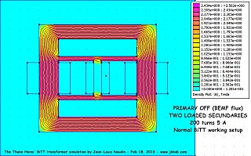

Click here for the ENGLISH VERSION 
18 février 2013 - DLE-TEST04 : Voici une simulation réalisée sous FEMM v4.2 qui montre le fonctionnement du transformateur Bi-Toroïd de Thane C Heins.
Le
primaire du transformateur BiTT comporte 1000 tours (AWG32), les
deux secondaires comportent 200 tours (AWG20).
Le double circuit magnétique du BiTT est réalisé en "M-45
steel".
Lorsque le primaire est alimenté, nous pouvons observer que les 2 secondaires sont exposés au flux magnétique.

Lorsque le primaire est déconnecté et SI UN SEUL SECONDAIRE est CHARGE, la force contre électromotrice (Back EMF) de ce dernier produit un flux magnétique dans la bobine du primaire.


SI LES DEUX SECONDAIRES SONT CHARGES, alors la bobine primaire n'est pas parcourue par la force contre électromotrice (Back EMF) des deux secondaires.

Ci-dessous une image animé qui montre le fonctionnement du transformateur BiTT en utilisation.

Stay tuned,
Email: jnaudin509@aol.com
Documents et références :
TEST SUIVANT :